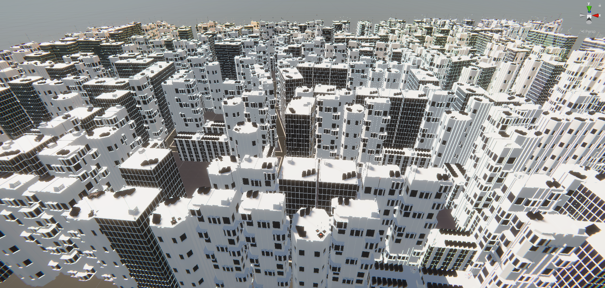
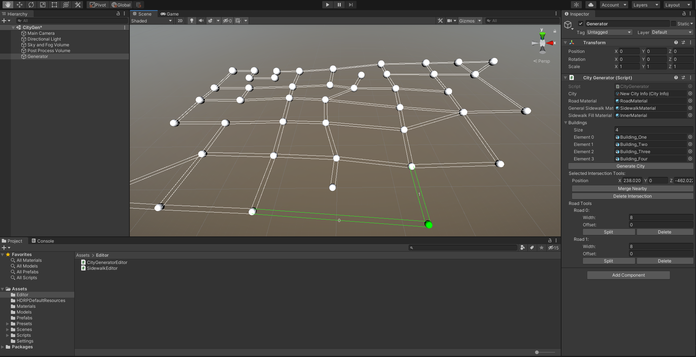
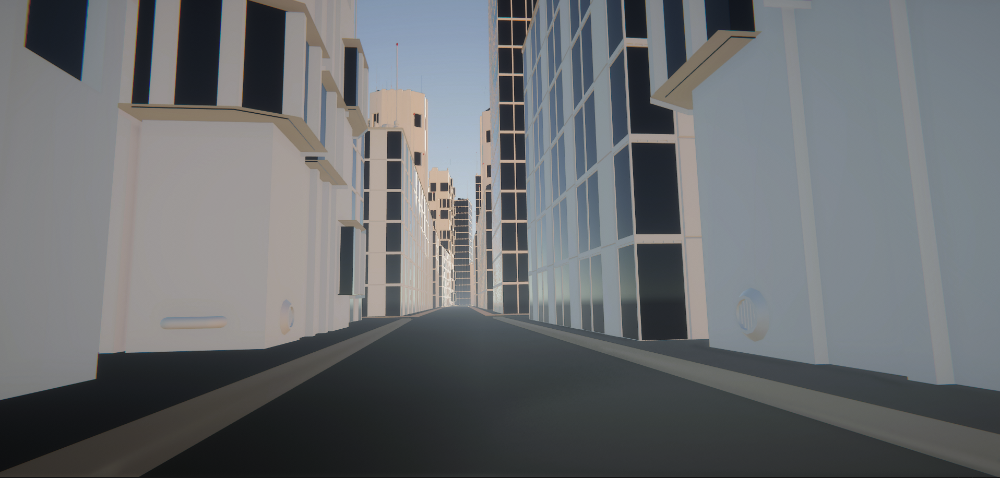

This is a unity editor tool for creating cities through road mesh generation and placing buildings along those roads.
This was a solo project where I created a unity editor tool that allowed for creating a graph of nodes that would generate roads. You could create intersections that would allow two or more roads to meet and split roads. Roads were able to have variable width or be offset to the side.

When generated, a mesh is created for each intersection and each road separately. The intersection mesh is generated organizing all the road intersections in a clockwise order and then finding the intersection point between the left side of one road and the right side of the next road going around in a circle. It does this for all the roads and then it puts a point at the center of the generated points and creates triangles from those points to the center. Then using all the intersection meshes, we connect them to each other to form roads, also accounting for any road that ends without an intersection. The roads are simple quads to keep triangle count down. From there we generate sidewalks. From each road we extrude upwards and then away from the roads. After sidewalk generation is finished, we start spawning in buildings. This is done using a list of prefabs. We go along the road, choose a building, spawn a collision box the size of the building to test if there is anything blocking the way. If nothing is there, spawn the building and increment the building length to spawn the next. If there is something in the way, we iterate through the list of buildings to see if we can find one that fits. If nothing fits, we move onto the next road. Finally we use a mesh fill algorithm to create a basic fill for every area that is enclosed by sidewalks.
